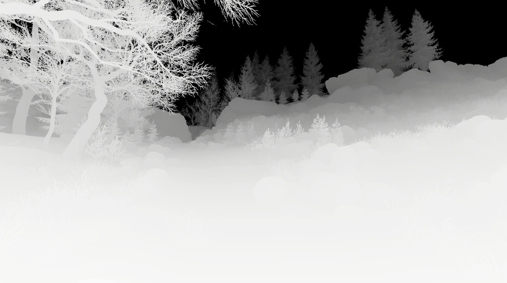
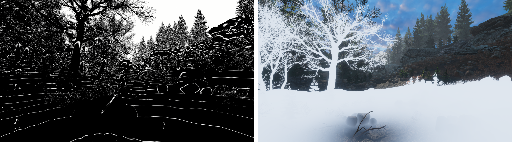
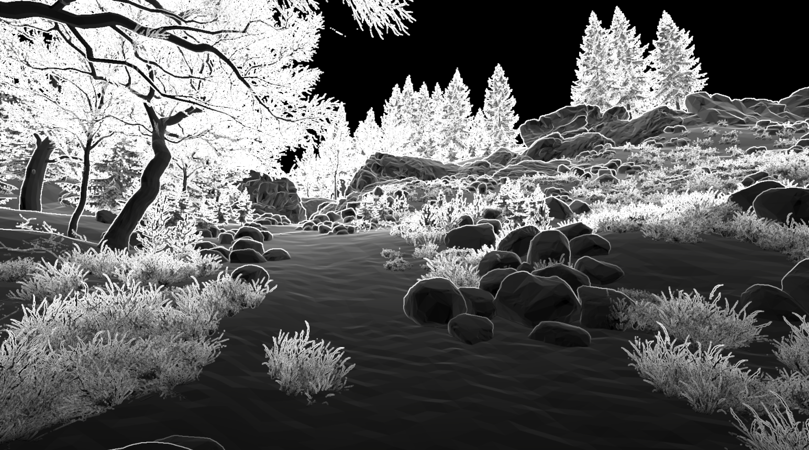
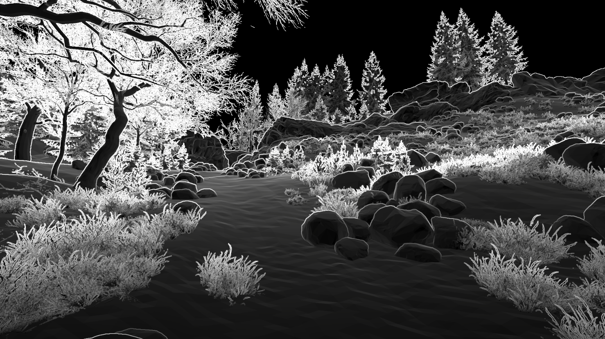
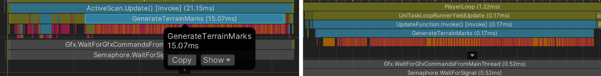
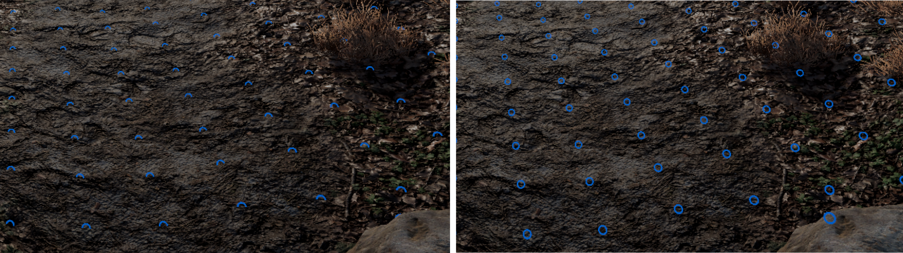

制作思路
更详细的制作记录请访问我的知乎专栏： https://zhuanlan.zhihu.com/p/697271173
扫描效果：
1 使用深度图重建世界坐标，用场景世界坐标和扫描起点坐标计算距离图

2 使用距离图 + frac + smoothStep 做出扫描线和扫描范围

3 扫描范围 * 扫描线得到范围内的扫描线, c# 中用 DOTWEEN 做扫描动画
描边：
1 用深度图 + Sobel 算子计算描边

2 用深读图做描边遮罩，减少远处描边强度

3 用扫描范围控制描边的显示
地面指示器：
1 用阵列射线检测查询标记位置和法线，通过法线区分标记类型

2 用 Async 异步方法分摊碰撞检测到多帧进行，消耗从单帧 15.07ms 到每帧 0.17ms

3 用 GPU Instance 方法批量绘制地面标记，顶点着色器中将面片重绘为 Billboard

4 片元着色器手动写入深度，解决标记和地面的遮挡问题

粒子：
1 在生成标记的时候创建粒子实例，播放后自动销毁
最终效果：